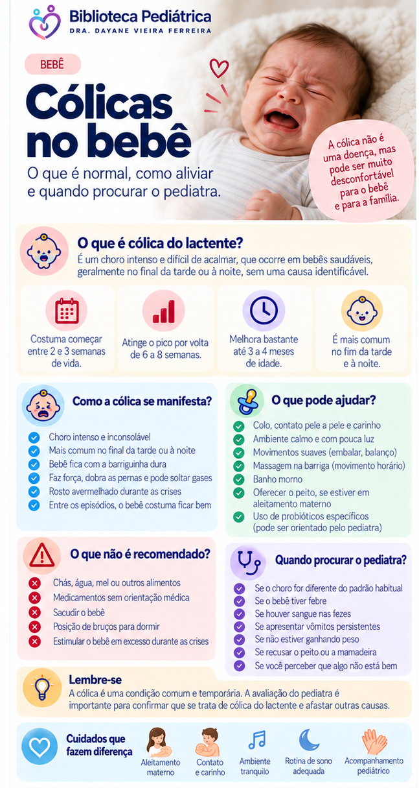

Cólicas no bebê
Entenda o choro associado à cólica do lactente, o que pode ajudar a acalmar o bebê e quais sinais indicam que é preciso procurar avaliação.
Como costuma ser a cólica?
Os episódios podem envolver choro difícil de consolar, inquietação e irritabilidade, muitas vezes em horários semelhantes, especialmente no fim da tarde ou início da noite. A SBP informa que costuma começar nas primeiras semanas, atingir maior intensidade por volta de 6 a 8 semanas e melhorar bastante até 3 ou 4 meses, desaparecendo quase sempre antes dos 5 meses.
O que pode ajudar em casa?
Colo e contato
Pegar o bebê no colo e proporcionar contato próximo pode ajudar a acalmá-lo.
Ambiente tranquilo
Reduza excesso de barulho, luz e estímulos. Uma rotina previsível também pode ajudar.
Movimentos suaves
A SBP cita flexionar suavemente as coxas sobre a barriga, além de banho morno ou compressa morna como medidas que podem auxiliar.
Amamentação
Não interrompa o aleitamento materno por causa da cólica sem orientação profissional.
Chás, remédios e troca de fórmula?
Não ofereça chás nem medicamentos e não troque a fórmula por conta própria. A SBP informa que medicamentos usados com a intenção de reduzir gases não demonstraram eficácia para a cólica. Probióticos também não devem ser escolhidos aleatoriamente: os resultados dependem de cepas específicas e da situação clínica.
Restrições alimentares maternas também não devem ser feitas de rotina. Quando existe suspeita de alergia à proteína do leite de vaca, a investigação e eventual teste de exclusão/reintrodução precisam ser orientados pelo pediatra.
Quando o choro precisa de avaliação rápida?
Procure atendimento quando o bebê apresentar choro muito diferente do habitual ou estiver com sinais como:
- febre, especialmente em bebê pequeno;
- recusa persistente para mamar ou dificuldade importante de alimentação;
- vômitos repetidos, em jato ou de cor verde;
- sangue nas fezes;
- sonolência excessiva, pouca resposta ou aparência de bebê muito doente;
- dificuldade para respirar, coloração azulada ou palidez importante;
- dificuldade para ganhar peso ou perda de peso.
Perguntas frequentes
Cólica prejudica o desenvolvimento?
Em um bebê saudável, que mama e cresce adequadamente e não apresenta sinais de alerta, a cólica costuma ser autolimitada e não prejudica o desenvolvimento.
Existe exame para confirmar?
Não. O diagnóstico é clínico. O pediatra avalia a história e o bebê para afastar outras causas de choro.
Refluxo explica todo choro?
Não. A SBP alerta que tratar refluxo não demonstrou reduzir a duração do choro da cólica.
Quando costuma melhorar?
Geralmente melhora progressivamente nos primeiros meses e quase sempre desaparece antes dos 5 meses.
Resumo visual
